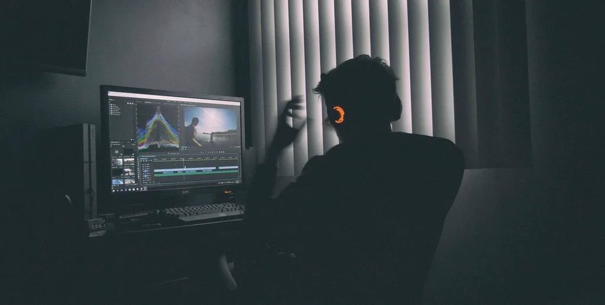
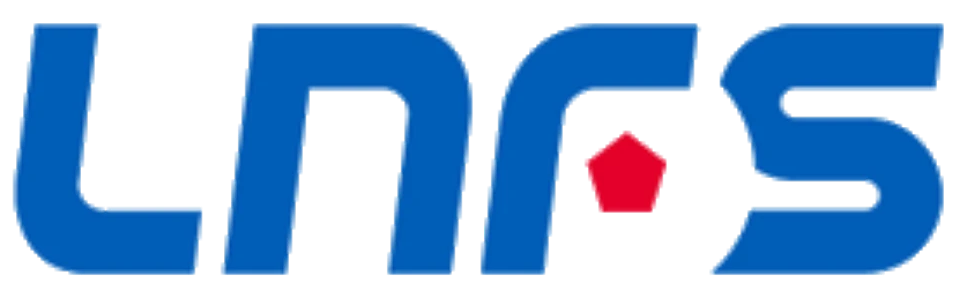
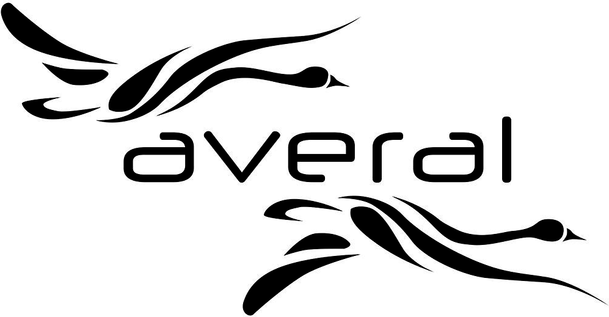
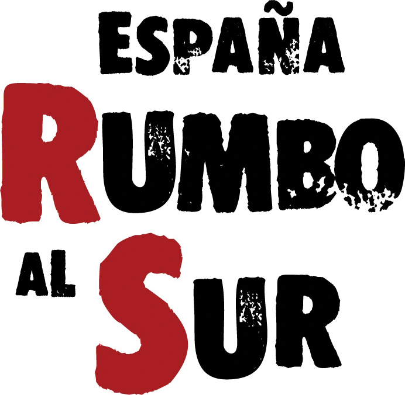
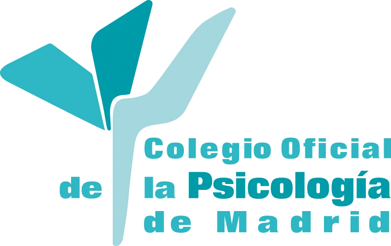
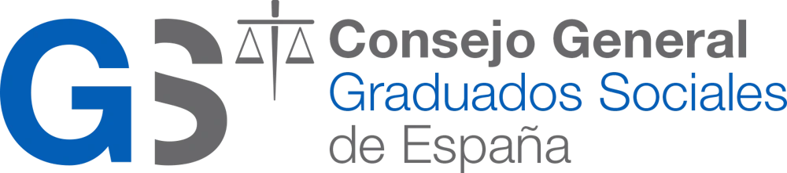

EDICIÓN CONTINUA DESDE 2005
La edición como parte de cada proyecto
Desde 2005 la edición y la postproducción han formado parte de mi día a día con todos los clientes y empresas con las que he colaborado.
- Más de 20 años de práctica: Uso constante de las herramientas de edición en paralelo a la realización, el directo y la técnica audiovisual.
- Visión de conjunto: Conocer la cadena completa, desde la captación hasta la emisión, permite editar pensando en el resultado final y en cada formato de entrega.
- Autonomía: Capacidad para preparar resúmenes, piezas para redes, cabeceras y contenidos para pantallas sin depender de un departamento de postproducción.

LIGA NACIONAL DE FÚTBOL SALA (2018-2020)
Editor de resúmenes y clips para la productora Averal
Edición en Adobe Premiere y After Effects de los resúmenes de todos los partidos de la Primera División de la LNFS durante dos temporadas.
- Resúmenes de Primera División: Montaje de los resúmenes de cada jornada, con plazos ajustados tras el final de los partidos.
- Entrega a Televisión Española: Envío de los resúmenes a RTVE para su emisión.
- Magazine "Pista Azul": Edición de todos los clips del programa semanal dedicado al fútbol sala.

PRODUCTORA AVERAL
Editor y cámara de estudio
Diversos trabajos de edición para la productora Averal, entre ellos la serie documental "Noticiario 1936", en la que también trabajé como cámara de estudio.
- "Noticiario 1936": Edición de la serie documental que repasa, día a día, los 150 días previos a la Guerra Civil desde un plató ambientado como una emisora de radio del Madrid de 1936.
- Cámara de estudio: Operación de cámara en las grabaciones de plató del programa.
- Otros proyectos de edición: Montaje de diferentes piezas y programas para la productora.

ESPAÑA RUMBO AL SUR
Editor de la expedición (2008, 2009, 2019 y 2020)
Editor de la expedición juvenil España Rumbo al Sur en sus ediciones de 2019 y 2020, y antes en 2008 y 2009, cuando aún se llamaba Madrid Rumbo al Sur.
- Edición siguiendo la expedición: Montaje del material en paralelo al recorrido, acompañando a la expedición durante todo el viaje.
- Adobe Premiere y After Effects: Edición de las piezas en Premiere y grafismo animado en After Effects.
- Cuatro ediciones: 2008 y 2009 como Madrid Rumbo al Sur, y 2019 y 2020 ya como España Rumbo al Sur.

COLEGIO OFICIAL DE LA PSICOLOGÍA DE MADRID (2008-2013)
Responsable del área audiovisual
Durante cinco años, todo lo que el Colegio emitía o publicaba en vídeo pasaba por mis manos. Asumí en solitario el área audiovisual completa: del directo a la edición y de la grabación a la publicación.
- Formación en streaming: Realicé en directo las sesiones formativas, jornadas y conferencias, llevando la formación del Colegio a colegiados de toda España cuando el streaming aún era una novedad.
- Edición de todo el catálogo formativo: Monté cada curso y cada ponencia grabada, convirtiendo horas de material en contenido claro y listo para consultar.
- Flujo completo bajo mi responsabilidad: Desde la cámara hasta la entrega final, sin intermediarios: una sola persona garantizando la calidad de principio a fin.

CONSEJO GENERAL DE GRADUADOS SOCIALES DE ESPAÑA (2008-2013)
Responsable del área audiovisual
Al mismo tiempo, llevé la voz audiovisual del órgano que representa a los graduados sociales de todo el país: sus cursos, jornadas y actos institucionales, en directo y en diferido.
- Directos de alcance nacional: Retransmití en streaming la actividad formativa e institucional del Consejo para profesionales de todas las comunidades autónomas.
- Postproducción a la altura de la institución: Edité cada sesión con la imagen cuidada y seria que exige un organismo de referencia en el ámbito jurídico-laboral.
- Dos instituciones en paralelo: Compaginé durante cinco años la dirección audiovisual del Consejo y del Colegio de la Psicología, demostrando organización y capacidad para sostener varios proyectos a la vez.

Herramientas de edición y postproducción
DaVinci Resolve
Edición, etalonaje y acabado de vídeo.
- Corrección de color primaria y secundaria por nodos
- Montaje multicámara sincronizado por audio o timecode
- Limpieza y mezcla de audio en Fairlight
- Uso de LUTs y gestión de color de cámaras broadcast
- Exportación a formatos de entrega para TV, web y redes
Adobe Premiere Pro
Montaje ágil de piezas corporativas y de eventos.
- Resúmenes y aftermovies de eventos corporativos
- Edición multicámara de ponencias y entrevistas
- Versiones en vertical (9:16) para redes sociales
- Subtitulado y rotulación de piezas
- Integración con After Effects mediante Dynamic Link
Adobe After Effects
Motion graphics y grafismo animado.
- Animación de rótulos, faldones y marcadores
- Cabeceras, cortinillas y transiciones de marca
- Contenidos animados para pantallas LED y videowalls
- Exportación con canal alfa para grafismo en directo
- Composición, tracking y croma
Adobe Photoshop
Retoque, composición y diseño gráfico.
- Retoque y corrección de fotografía
- Diseño de miniaturas para YouTube y redes
- Fondos y plantillas para rótulos de vMix y GT Title
- Adaptación de gráficos a resoluciones de pantallas LED
- Preparación de imágenes optimizadas para web